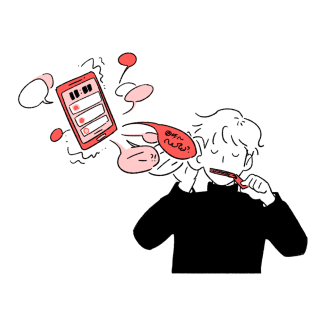

분 석 중...
나의 카카오톡 유형은?
인생이 연락두절!
핸드폰 방목형
멀티가 너~무 어려운 유형!
- 이 유형은 핸드폰을 자주 만지는 타입은 아니에요.
- 할 일이 있을 때는, 그 일에 집중하기 위해 핸드폰은 잠시 넣어두는 편이예요.
- 많은 이유가 있겠지만 멀티가 잘 되지 않고 개인 시간을 누구에게도 방해받고 싶어하지 않습니다.
- 핸드폰을 하지 않으면 심심하지 않냐구요? 이 유형은 집에서도 할 일이 너무 많아요! 집안일도 해야하고, 티비도 봐야하고, 반려동물 케어도 해야하고, 공부도 해야하고….
카톡? 그냥 차라리 만나..ㅎ
- 카톡보다는 전화가 더 편하긴 하지만, 용건만 간단히 했으면 좋겠어요.지금은 드라마 본방 사수 해야 하거든요.
- 핸드폰으로 연락하는 것 보다는 얼굴 보고 직접 만나서 이야기 하는 것을 더 좋아하고, 만나서는 그 누구보다도 상대에게 집중하는 타입입니다.
나의 카카오톡 유형은?
미리보기 적극활용!
프로 관음러형
카톡을 다룰 땐? 쿨하고 섹시해야 해요
- 이 유형은 핸드폰은 항상 끼고 사는 타입이에요.
- 핸드폰으로 유튜브 시청, 웹툰, 게임 등 다양한 것을 하고 있어요.
- 카톡이 오면 알고는 있지만, 바로 답장하지는 않아요. 바로 답장 하는 순간부터 계속 이어질 카톡이 너무 부담스럽거든요.
- 이 유형은 자신의 사생활을 스포츠 채널 중계하듯이 시시콜콜 이야기를 하는 것을 좋아하지 않아요.
- 이 타입에게 핸드폰은 연락의 수단보다는 인터넷 같은 존재이죠.
1을 보지 않는 것..그것이 ‘약속’이니까
- 카톡보다는 전화로 이야기 하는게 더 편해요. 긴 통화는 좋아하지 않지만, 짧은 시간의 통화는 괜찮답니다.
- 방금 보던 유튜브를 마저 봐야하기 때문에, 나머지 이야기는 만나서 했으면 좋겠어요.
나의 카카오톡 유형은?
당당하게 읽고 씹는
묵묵부답형

내 카톡 봤어? 응 봤어~
- 여러 유형 중, 카톡에 가장 쿨한 타입이예요. 무의미하게 핸드폰에 쏟는 시간을 아까워 해요
- 연락이 오더라도 중요한 일이 아니면 시간내어 답장하지는 않아요. 이들은 핸드폰보다는 현실의 문제에 집중하는 편이에요.
- 이 유형은 카톡을 보더라도 답장을 미루는 편이예요. 너무 바쁘거든요! 그러다 보니 의도치 않게 읽씹을 하는 경우가 종종 생긴답니다.
근데 왜 답이 없어? 응~
- 카톡이든 통화든 중요한 연락이라면 어떤 것도 상관 없어요.
- 길게 이야기를 해야한다면, 통화를 하거나 만나서 이야기를 하는걸 더 좋지만, 제가 너무 바빠서…. 시간이 날지는 모르겠네요.
나의 카카오톡 유형은?
늦어도 답장은 꼭!
의무 답장형
오늘의 할 일 : 카톡 답장하기
- 이 유형은 딱히 카톡을 싫어하는건 아니지만 즐겨하지 않는 편이에요.
- 바쁠 때는 당연히 핸드폰을 잘 보지는 못하지만, 그래도 틈틈이 확인하려고 합니다.
- 핸드폰을 자주 보는 편이 아닌데도 카카오톡의 빨간점을 거슬려는 성격 때문에 의도치 않게 빠른 답장을 하기도 해요.
- 이 유형은 친한 친구들과 종종 시시콜콜한 이야기를 나누기는 하지만, 급한 대화들을 간단하고 빠르게 나누는 것을 좋아해요.
- 친하지 않은 사람에게 카카오톡이 오면 동공지진이 일어나기도 한답니다.
빨간색이 거슬릴 뿐이라구!
- 카톡으로 이런 저런 이야기를 하는 것도 좋아하고, 통화를 하는 것도 좋아해요.
- 하지만 어색한 친구들은…. (동공지진)
나의 카카오톡 유형은?
AI급 즉문 즉답
프로 답장형
카톡 안에서 나는 oh 파/워/인/싸! oh
- 이 유형은 핸드폰을 자주 만지고 시도때도 없이 카톡을 하는 타입이에요
- But, 모두에게나 답장이 빠른 것은아니예요. 친하지 않은 사람이나 카톡이 재미 없는 사람에게는 은근한 안읽씹을 한답니다.
- 단톡방에서 가장 활발한 유형으로, 다양한 이모티콘과 짤을 보유하고 있어요.
- 이 유형은 재미있는 사람과 카톡하는 것을 좋아하고, 자주 연락하는 친구들도 모두 드립력 만렙인 친구들이에요.
- 여러가지 이모티콘과 짤로 친구들이랑 드립 배틀 하는 것을 좋아합니다.
단톡방은 나의 메인 그라운드!
- 친구들과의 안부는 대부분 단톡방에서 이루어져요.
- 물론 마음 맞는 사람들과의 카톡이나 짧은 통화는 언제나 즐겁고 환영합니다.
나의 카카오톡 유형은?
핸드폰은 신체의 일부!
치료가 필요한 중독자형
내 피를 이루는 것은 101010...
- 이 유형은 모든 유형 중, 가장 카톡을 즐겨하는 타입이에요.
- 사람들과의 소통을 좋아하기 때문에 친구들과 서로의 일상을 공유하며 연락을 꾸준히 이어가는 것이 내 삶의 낛이예요.
- 외로움을 많이 타는 편으로, 카톡 대화방에 대화 할 상대가 없으면 외롭고 공허한 느낌이 들어요.
- 친하지 않은 사람과 카톡하거나 상대방이 재미없게 이야기해도 답장을 잘 해주는 편이고 카톡도 잘 이어가요. 먼저 카톡을 끝 맺으려고 하지 않습니다.
근손실? No No..카톡손실
- 친구들과 만나도 연락하는 친구들과의 끈도 놓지 않아요.
- 지금 같이 있는 친구들과의 자리도 즐겁고 좋지만 카톡 안에서 나를 기다리고 있는 친구들과도 계속 대화를 해야할 것만 같아요.